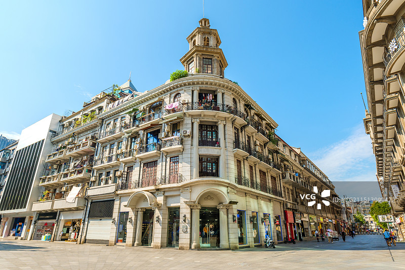
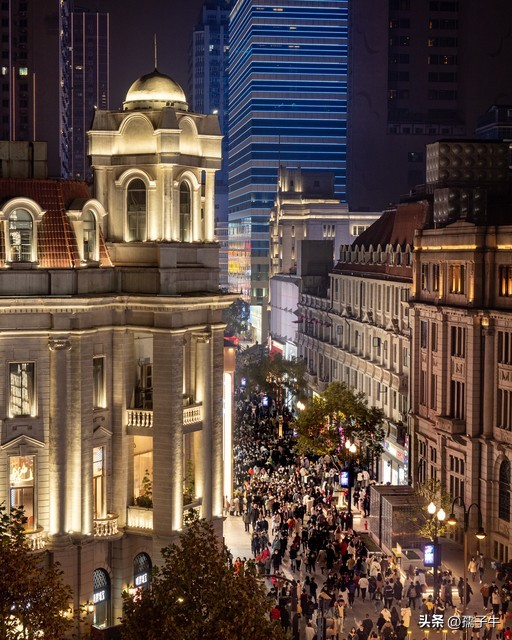

V·01
黎黄陂路 · 梧桐洋房
梧桐洋房
曾是汉口俄租界，几百米两侧保留多栋欧式老建筑，树荫下开着咖啡馆、小店与画廊。
汉口老街区保留了百年前的建筑骨架：红砖洋房、欧式骑楼、拱券门窗与铁艺阳台， 路旁梧桐长得很高。在这些坐标里，保存着城市旧得刚刚好的那一面。
曾是汉口俄租界，几百米两侧保留多栋欧式老建筑，树荫下开着咖啡馆、小店与画廊。

江汉路 · 骑楼转角街角老建筑带着雕花立面与拱窗，是江汉路最有辨识度的画面之一。
 黎黄陂路 · 石板街巷
黎黄陂路 · 石板街巷
石板路顺着树荫延伸，两旁是老房子与小店铺，节奏比主街慢许多。

江汉路 · 入夜人流夜里灯亮起，老建筑被暖光勾勒，街上行人往来，历史感与烟火气叠在一起。
不必按打卡清单赶场，挑一条主街走到头，再拐进旁边安静的支巷。 多看墙面、窗棂、招牌和树荫，这些细节比单纯拍正面建筑更有味道。
老街区新旧店铺交错，老房子里开出新的小店，正是这些交错让街景显得鲜活。